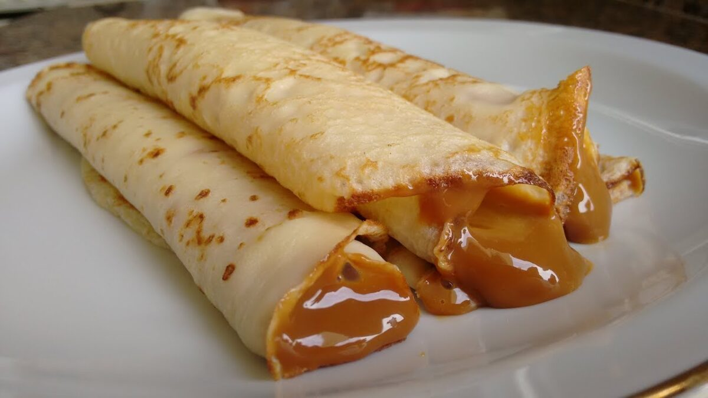

Home
How to make argentinian Panqueques

Description
This is one of the best desserts they have in Argentina,
it's made with the same ingredients as the pancakes but are thinner and they have the famous Dulce de Leche.
Ingredients
- 2 cups of milk
- 8.81 oz of flour
- Salt
- 2 eggs
- Dulce de Leche
Steps
- Add the eggs and the milk in a bowl
- Add just a few grains of salt and the flour, mix them with your hand or use a blender so you don't get lumps
- Put the mix in the fridge for 30 minutes
- Heat a pan with grease and pour the mix with a spoon
- When you see them clot, flip it
- Once it's cooked, add all the dulce de leche that you want and enjoy !